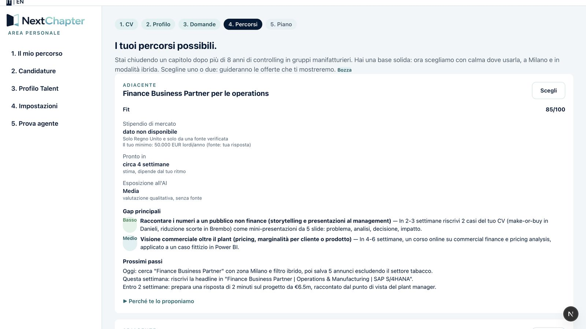

Question 1–2
Who is it for, and what problem does it solve?
The person leaving: the user
Made redundant in a restructuring. My test persona: a plant controller, eight years in manufacturing, in Milan. A good CV, but no idea where those skills fit next or how to compete for a different role.
The company: the buyer
HR running the restructuring wants to support leavers and see that it works, without seeing anyone's private career data.
The problem
Most leavers get no help: 73% of redundant employees in a UK study received no outplacement, and employers blamed lack of resources and priority (Personnel Today, 2010). Where it exists, coach-led outplacement costs from several hundred to several thousand dollars per person (Randstad UK, 2020). NextChapter tests whether AI can give everyone the repetitive first part of that support, at a fraction of the cost.

What the company never sees
Only group figures about at least five people, inside and outside each number; never CVs, chats or check-ins (how).